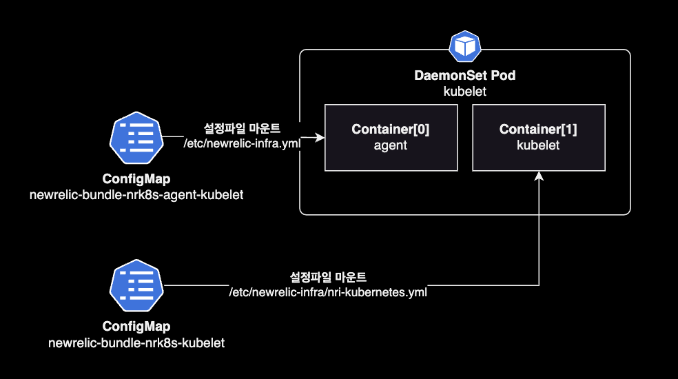

nri-bundle
개요
Newrelic 통합 차트를 사용해서 쿠버네티스 클러스터에 모니터링 수집 플랫폼 구축하는 방법을 소개합니다.
이 가이드 문서에서 언급되는 Newrelic 헬름 차트는 통합 차트인 nri-bundle을 사용합니다.
배경지식
nri-bundle
여러 개의 뉴렐릭 모니터링 구성요소를 쉽게 배포하기 위해 New Relic Kubernetes 솔루션의 개별 차트를 그룹화한 통합 차트입니다.
nri-bundle 차트에는 아래와 같이 Sub chart들이 포함되어 있습니다.
# -- main chart
nri-bundle 5.0.18 https://newrelic.github.io/nri-bundle
└── charts/
| # -- sub charts
├── newrelic-infrastructure 3.19.0 https://newrelic.github.io/nri-kubernetes
├── nri-prometheus 2.1.16 https://newrelic.github.io/nri-prometheus
├── newrelic-prometheus-agent 1.2.1 https://newrelic.github.io/newrelic-prometheus-configurator
├── nri-metadata-injection 4.3.1 https://newrelic.github.io/k8s-metadata-injection
├── newrelic-k8s-metrics-adapter 1.2.0 https://newrelic.github.io/newrelic-k8s-metrics-adapter
├── kube-state-metrics 4.23.0 https://prometheus-community.github.io/helm-charts
├── nri-kube-events 3.1.0 https://newrelic.github.io/nri-kube-events
├── newrelic-logging 1.14.2 https://newrelic.github.io/helm-charts
├── newrelic-pixie 2.1.1 https://newrelic.github.io/helm-charts
├── pixie-operator-chart 0.1.1 https://pixie-operator-charts.storage.googleapis.com
└── newrelic-infra-operator 2.2.1 https://newrelic.github.io/newrelic-infra-operator
nri-bundle로 배포시 장점
nri-bundle 통합 차트를 사용하는 것에는 여러 가지 장점이 있습니다.
- 관리의 간소화: 각 구성 요소를 개별적으로 관리하는 대신에, ’nri-bundle’을 사용하면 여러 개의 New Relic 통합 및 관련 도구를 한 번에 배포하고 관리할 수 있습니다.
- 일관성: 번들 내의 모든 구성 요소는 함께 잘 작동하는 것이 검증되어 있습니다. 이는 일관된 경험을 제공합니다.
- 상호 운용성: 번들 내의 구성 요소들은 서로 매끄럽게 통합되도록 설계되어 있습니다. 이는 호환성 문제를 줄이고 업무 흐름을 간소화합니다.
- 배포의 용이성: 전체 번들을 배포하는 것은 한 번의 명령어 또는 구성 단계만으로 가능합니다. 이는 각 구성 요소를 별도로 배포하는 것과 비교하여 시간과 노력을 절약해줍니다.
- 최적화된 성능: 번들 내의 구성 요소들은 함께 효율적으로 작동하도록 최적화되어 있습니다. 이는 서로 다른 솔루션을 사용하는 것보다 더 나은 성능을 제공할 수 있습니다.
- 중앙 집중식 지원: 단일 번들을 사용하면 New Relic 또는 커뮤니티로부터 중앙 집중식 지원을 받을 수 있어요. 이는 문제를 해결하고 해결하는 데 더욱 편리합니다.
결론적으로, nri-bundle 헬름 차트를 사용해서 뉴렐릭 모니터링 인프라를 구성할 경우, Kubernetes 환경에 대한 더 일관되고 효율적인 모니터링 솔루션을 제공함으로써 New Relic 통합 및 관련 도구의 배포 및 관리가 단순화됩니다.
설치
헬름 차트 레포지터리를 로컬에 다운로드 받습니다.
git clone https://github.com/newrelic/helm-charts.git
cd helm-charts/charts/nri-bundle
하위 차트들을 로컬에 다운로드 받습니다.
helm dependency update
현재 디렉토리에 구성된 하위 차트 목록을 확인합니다.
$ helm dependency list
NAME VERSION REPOSITORY STATUS
newrelic-infrastructure 3.19.0 https://newrelic.github.io/nri-kubernetes ok
nri-prometheus 2.1.16 https://newrelic.github.io/nri-prometheus ok
newrelic-prometheus-agent 1.2.1 https://newrelic.github.io/newrelic-prometheus-configurator ok
nri-metadata-injection 4.3.1 https://newrelic.github.io/k8s-metadata-injection ok
newrelic-k8s-metrics-adapter 1.2.0 https://newrelic.github.io/newrelic-k8s-metrics-adapter ok
kube-state-metrics 4.23.0 https://prometheus-community.github.io/helm-charts ok
nri-kube-events 3.1.0 https://newrelic.github.io/nri-kube-events ok
newrelic-logging 1.14.2 https://newrelic.github.io/helm-charts ok
newrelic-pixie 2.1.1 https://newrelic.github.io/helm-charts ok
pixie-operator-chart 0.1.1 https://pixie-operator-charts.storage.googleapis.com ok
newrelic-infra-operator 2.2.1 https://newrelic.github.io/newrelic-infra-operator ok
nri-bundle 메인 차트를 클러스터의 newrelic 네임스페이스에 설치합니다.
helm upgrade \
--install \
--create-namespace \
--namespace newrelic \
nri-bundle . \
--values values.yaml \
--wait
설정 가이드
kubelet 설정
newrelic-infrasturcture 메트릭 수집을 위한 kubelet 데몬셋이 배포됩니다.

kubelet 데몬셋에는 kubelet과 뉴렐릭 에이전트가 하나의 파드로 포함되어 있습니다.
$ kubectl get ds -n newrelic
NAME DESIRED CURRENT READY UP-TO-DATE AVAILABLE NODE SELECTOR AGE
newrelic-bundle-nrk8s-kubelet 91 91 91 91 91 <none> 19d
뉴렐릭 에이전트의 설정을 확인하려면 뉴렐릭 네임스페이스의 ConfigMap을 조회합니다.
kubectl get configmap newrelic-bundle-nrk8s-agent-kubelet \
-n newrelic \
-o yaml
apiVersion: v1
data:
newrelic-infra.yml: |-
# This is the configuration file for the infrastructure agent. See:
# https://docs.newrelic.com/docs/infrastructure/install-infrastructure-agent/configuration/infrastructure-agent-configuration-settings/
custom_attributes:
clusterName: TEST-CLUSTER
features:
docker_enabled: false
http_server_enabled: true
http_server_port: 8003
metrics_network_sample_rate: 300
metrics_nfs_sample_rate: 300
metrics_process_sample_rate: -1
metrics_storage_sample_rate: 300
metrics_system_sample_rate: 300
kind: ConfigMap
metadata:
...
nri-bundle 차트에서 newrelic-infrasturcture 관련 설정들은 ConfigMap에 추가되고, ConfigMap은 파드에 설정파일 /etc/newrelic-infra.yml로 마운트됩니다.
비용 최적화 기법
Low data mode 켜기
연관된 차트 이름: nri-bundle (메인 차트)
lowDataMode 토글은 Newrelic으로 전송되는 데이터를 줄이는 가장 간단한 방법입니다.
nri-bundle 차트에서 global.lowDataMode 값을 true로 설정하면 기본 스크레이핑 간격이 15s기본값 → 30s로 변경됩니다.
# nri-bundle/values.yaml
# nri-bundle chart version v5.0.18
global:
# -- (bool) Reduces number of metrics sent in order to reduce costs
# @default -- false
lowDataMode: true
lowDataMode가 활성화되면 기본 스크레이핑 간격이 15s에서 30s로 변경됩니다. 그리고 아래 4개 차트에 미리 세팅된 비용 최적화 세팅들이 자동 적용됩니다.
- Newrelic Infrastructure
- Prometheus Agent Integration
- Newrelic Logging
- Newrelic Pixie Integration
어떤 이유로 인해 초 수를 미세 조정해야 하는 경우 newrelic-infrastructure 차트에서 common.config.interval 설정에 직접 선언해서 적용할 수 있습니다.
# nri-bundle/values.yaml
# nri-bundle chart version v5.0.18
...
newrelic-infrastructure:
common:
config:
interval: 40s
global:
lowDataMode: false
...
interval 값은 40s보다 큰 값으로 설정은 지원되지 않으며 이로 인해 NR UI가 제대로 작동하지 않게 됩니다.
메트릭 샘플링 주기 변경
연관된 차트 이름: newrelic-infrastructure (하위 차트)
메트릭 샘플링 주기를 좀 더 길게 변경합니다.
# nri-bundle/values.yaml
# nri-bundle chart version v5.0.18
...
newrelic-infrasturcture:
common:
agentConfig:
disable_all_plugin: true
metrics_network_sample_rate: -1
metrics_process_sample_rate: 300
metrics_storage_sample_rate: 300
metrics_system_sample_rate: 300
metrics_nfs_sample_rate: 300
...
관련문서
newrelic-infrasturcture 에이전트 설정 (disable_all_plugin)
newrelic-infrasturcture 에이전트 설정 (sample_rate)
네임스페이스 필터링
연관된 차트 이름: newrelic-infrastructure (하위 차트)
지정된 네임스페이스에서만 ksmkube-state-metrics 및 kubelet 메트릭을 필터링합니다.
간단한 필터링 설정은 namespaceSelector.matchLabels를 사용합니다.
# nri-bundle/values.yaml
# nri-bundle chart version v5.0.18
...
newrelic-infrastructure:
common:
config:
namespaceSelector:
matchLabels:
newrelic.com/scrape: true
...
위 설정의 경우 newrelic.com/scrape 라벨이 붙은 네임스페이스만 수집하게 됩니다.
더 복잡한 조건의 필터링 설정은 namespaceSelector.matchExpressions를 사용합니다.
# nri-bundle/values.yaml
# nri-bundle chart version v5.0.18
...
newrelic-infrastructure:
common:
config:
namespaceSelector:
matchExpressions:
- {key: newrelic.com/scrape, operator: NotIn, values: ["false"]}
실제 서비스와 연관된 Namespace만 모니터링하도록 하면 비용을 절감할 수 있습니다.
관련문서
newrelic-infrastructure values
쿠버네티스 리소스 필터링
불필요한 쿠버네티스 리소스를 메트릭 수집에서 제외합니다.
# nri-bundle/values.yaml
# nri-bundle chart version v5.0.18
newrelic-infrastructure:
...
kube-state-metrics:
# kube-state-metrics.enabled -- Install the [`kube-state-metrics` chart](https://github.com/prometheus-community/helm-charts/tree/main/charts/kube-state-metrics) from the stable helm charts repository.
# This is mandatory if `infrastructure.enabled` is set to `true` and the user does not provide its own instance of KSM version >=1.8 and <=2.0. Note, kube-state-metrics v2+ disables labels/annotations
# metrics by default. You can enable the target labels/annotations metrics to be monitored by using the metricLabelsAllowlist/metricAnnotationsAllowList options described [here](https://github.com/prometheus-community/helm-charts/blob/159cd8e4fb89b8b107dcc100287504bb91bf30e0/charts/kube-state-metrics/values.yaml#L274) in
# your Kubernetes clusters.
enabled: true
collectors:
# - certificatesigningrequests
# - configmaps
# - cronjobs
# - daemonsets
- deployments
# - endpoints
# - horizontalpodautoscalers
- ingresses
# - jobs
# - leases
# - limitranges
# - mutatingwebhookconfigurations
- namespaces
# - networkpolicies
- nodes
# - persistentvolumeclaims
# - persistentvolumes
# - poddisruptionbudgets
- pods
# - replicasets
# - replicationcontrollers
# - resourcequotas
# - secrets
# - services
- statefulsets
# - storageclasses
# - validatingwebhookconfigurations
# - volumeattachments
Deployment 히스토리 보관 수 조정
Deployment spec 설정 중 하나인 revisionHistoryLimit는 Kubernetes에서 Deployment의 롤아웃 기록을 보관할 최대 개수를 설정하는 속성입니다. 기본적으로 10개의 이전 버전이 보관되며, 이 제한을 초과하면 가장 오래된 배포 기록부터 삭제됩니다.
apiVersion: apps/v1
kind: Deployment
metadata:
# ...
spec:
revisionHistoryLimit: 10
이는 시스템의 리소스를 효율적으로 사용하고 필요시 이전 버전으로 롤백할 수 있는 기능을 제공합니다.
revisionHistoryLimit을 기본값 10 → 0으로 줄이는 경우, 20%의 데이터를 절감할 수 있습니다. 대신 Deployment의 롤백이 필요없는 경우에만 revisionHistoryLimit을 0으로 지정하도록 합니다.
apiVersion: apps/v1
kind: Deployment
metadata:
# ...
spec:
revisionHistoryLimit: 0
비용절감 효과
적용한 nri-bundle 상세설정
- Low data mode 켜기 (global)
- 메트릭 샘플링 주기 변경 (newrelic-infrastructure 차트)
- 쿠버네티스 리소스 필터링 (kube-state-metrics 차트)
- Deployment 히스토리 보관 수 조정 (쿠버네티스 네이티브한 설정)
위 기법 적용시 다음과 같이 수집된 데이터 비용이 절감되었습니다.
| Source | 적용 전 한달 | 적용 후 한달 | 절감율 |
|---|---|---|---|
| Infrastructure integrations | 18,260 GB | 6,387 GB | 약 64% 절감 |
| Infrastructure processes | 257 GB | 443 GB | - |
| Metrics | 9,039 GB | 7,902 GB | 약 10% 절감 |